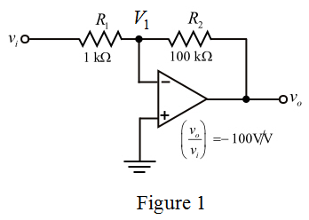

(a)
Write the expression for the closed loop voltage gain.
Substitute  for
for  in the equation.
in the equation.
Thus, the value of resistance  is
is .
.
(a)
Write the expression for the closed loop voltage gain.
Substitute for in the equation.
Thus, the value of resistance is.
Draw the design of inverting amplifier.

(b)
Consider the value of the open loop gain, .
Calculate the closed loop gain.
Substitute  for
for  ,
,  for
for  and for
and for  in the equation.
in the equation.
Thus, the closed loop gain of the circuit is .
(c)
The resistance is connected in parallel with resistor  .
.
Determine the parallel combination of resistance.
Apply Kirchhoff’s current law at node and resistor is replaced with .
Substitute for , for and  for
for  in the equation.
in the equation.
Determine the value of resistance, .
Substitute for and  for
for  in the equation.
in the equation.
Consider the closest standard resistance of .
Determine the value of resistance, .
Therefore, the value of resistance, is .